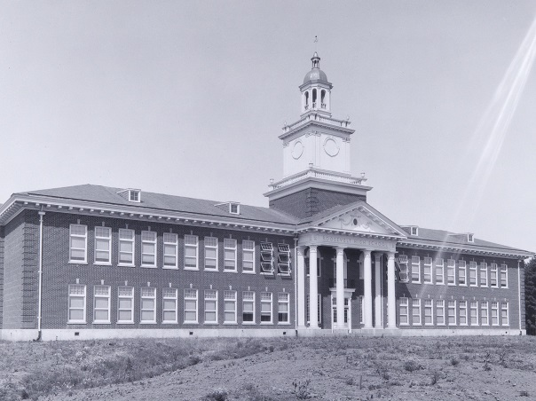

← Return to Volunteer Page

Time commitment varies between 1 - 6 hours/month.
Participation will primarily be in-person, with some business conducted virtually
over email.
We are seeking 4 volunteers for this role.
Volunteers should have an interest in the history of RHS and the local community,
but no specific experience is required.
Our History Committee is always looking to unearth the many stories of Roosevelt. The Committee has a wide umbrella that covers a variety
of project types from handling artifacts from the earliest days of our school to documenting the experiences of current students to keep for
future records. Project topics range from student traditions to athletic records to alumni success stories. Whether you are interested in deep research,
crafting eye-catching displays, or something else entirely, the Committee welcomes and appreciates new volunteers.
Duties & Responsibilities
- Participate in ongoing projects as volunteers are needed.
- This could include: Historical research, organizing materials, interviewing historical figures including
alumni, writing historical pieces for displays, procuring historical objects.
- Attend all History Committee meetings - at least once per quarter.
- Meetings will typically take place after Board Meetings, or as needed when special projects arise.
- Participate in the development and upkeep of on-campus historical displays.
Interested in volunteering? Send an email to our History Committee at history@rooseveltalumni.org
with the subject line "History Committee Member" to learn more.
We can't wait to have you join us!